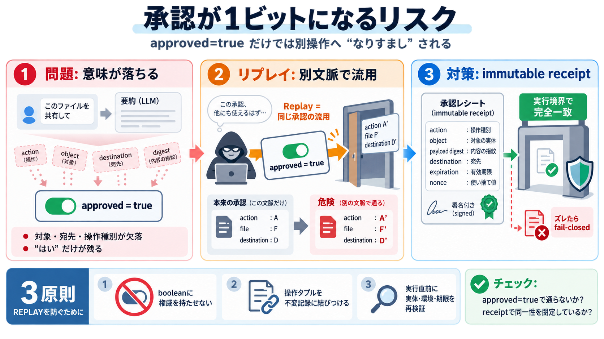

approval of, approval to, approve, approve of
Approval suggests agreement or consent and can be followed by the preposition of or to. Your approval means a lot to me.

Approval suggests agreement or consent and can be followed by the preposition of or to. Your approval means a lot to me.
They have the same meaning but "approval to" must be followed by a verb and "approval for" must be followed by a noun. F…
Approve is a verb, approved is past tense, and approval is the process or result of being approved.
Approve means to give formal sanction or official permission for something. Approve of means to like something or to hav…
approval in American English · 1. the act of approving · 2. favorable attitude or opinion · 3. formal consent or sanctio…